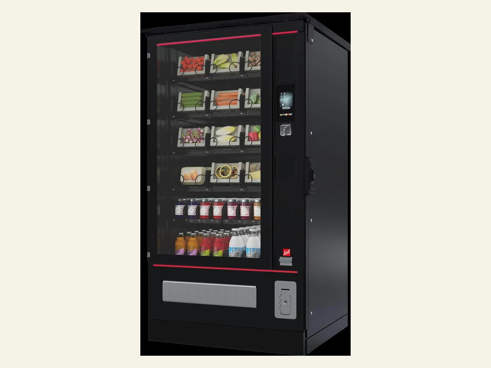
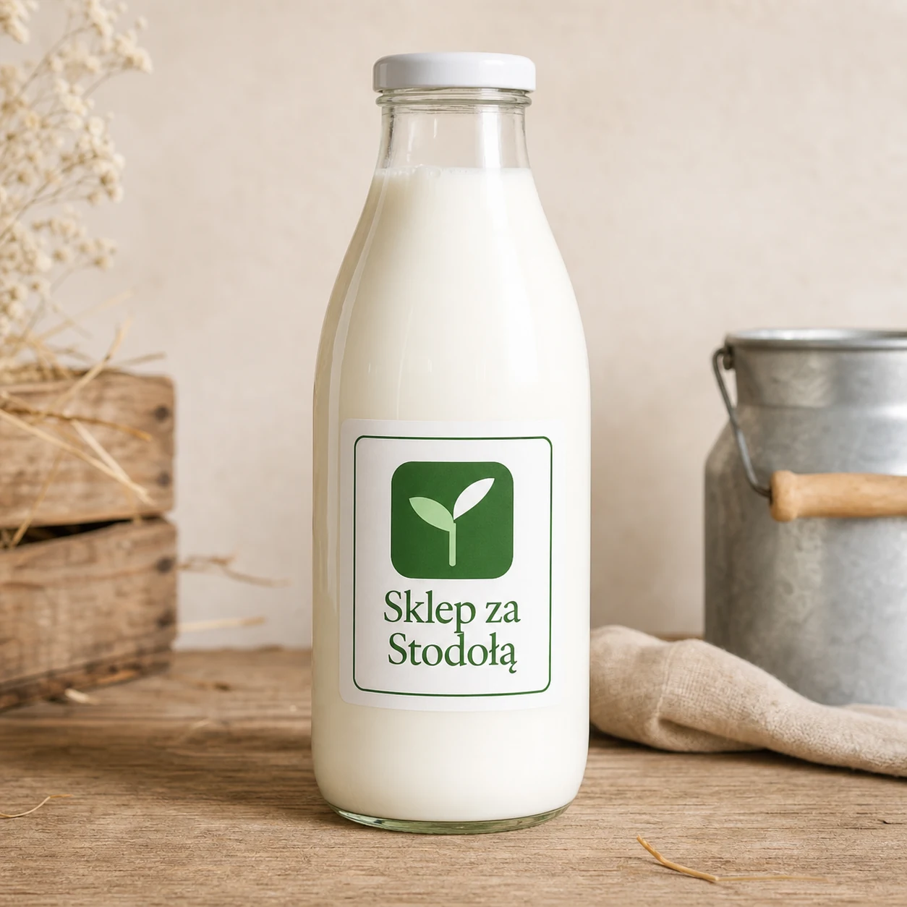

01 · Pawilon
Miejsce, które robi
wrażenie profesjonalizmu.
Drewniany punkt sprzedaży przy gospodarstwie, dopasowany do celu: pod mlekomat albo jako sklep gospodarczy z szerszym asortymentem.
Chroni mlekomat i automaty, porządkuje obsługę klienta.
Miejsce na oznaczenie, instrukcje i wygodny odbiór 24/7.
Dwa warianty: pod mlekomat albo pełny sklep gospodarczy.
Zobacz pełną ofertę →

02 · Mlekomat Premium
Serce systemu —
szwajcarski BRUNIMAT.
Mlekomat BRUNIMAT z certyfikatem CE-MID do legalnej sprzedaży świeżego mleka, dostępny dla klienta bez przerwy.
Chłodzi, liczy i płucze się automatycznie — bez obsługi.
Płatność kartą, banknotem lub monetą.
Szwajcarska technologia, certyfikat CE-MID, szkolenie i serwis w Polsce.
Zobacz pełną ofertę →

03 · Automaty Sielaff
Reszta asortymentu,
dostępna całą dobę.
Automaty Sielaff dobierane pod realny asortyment gospodarstwa — uzupełnienie mlekomatu o produkty, które też można sprzedawać bez obsługi.
Warianty chłodnicze i combi na sery, jaja, jogurty, masło, przetwory.
Przy większych projektach: napoje, produkty paczkowane, outdoor.
Rozwiązania zwrotne dla obiegu opakowań.
Zobacz pełną ofertę →

04 · Szklane butelki
Ostatni detal,
który buduje markę.
Zwrotne szklane butelki do świeżego mleka — estetyczne opakowanie zamiast przypadkowych pojemników klienta.
Pojemności 1 l i 0,5 l, szkło do kontaktu z żywnością.
Nasz nadruk od ręki albo indywidualny nadruk gospodarstwa.
Zakrętka wielokrotnego użytku, gotowe do obiegu zwrotnego.
Zobacz pełną ofertę →